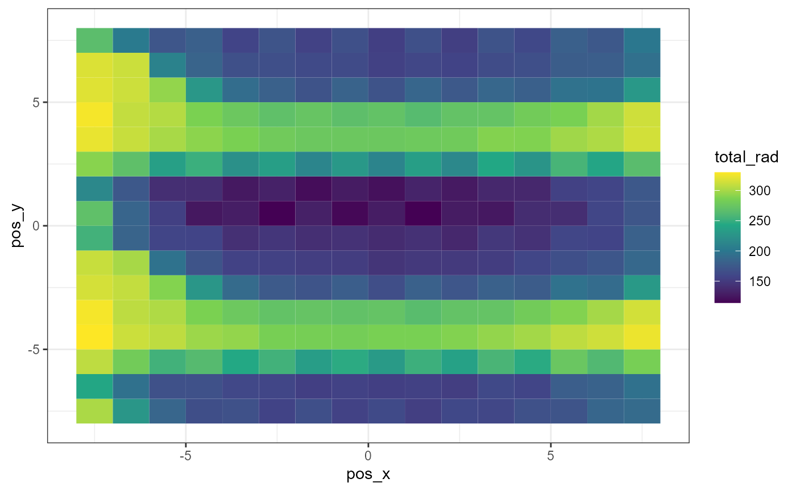

Example processing a single time point
example-single.RmdFirst set up the correct day and time
In the agroforestry app,
you can select a single moment for a simulation. This moment is defined
by the Time of day, the Day and the
Leaf growth setting.
To enable easy conversion from UTC time to the corresponding input,
we developed the timetosolar() function:
library(tidyverse)
library(agroforlight)
datetime <- "2024-05-26 11:00:00"
timetosolar(datetime = datetime, lat = 50.5, lon = 3.8)
#> $day_for_app
#> [1] 157
#>
#> $time_for_app
#> [1] 11.26667Run the 3-D calculation
The Day and Time of day settings can then
be used as input for a simulation, where we assume that all leaves are
present:
Pressing Calculate moment will generate and download a
csv file with the name moment_157_11_100.csv, where:
-
momentrefers to the fact that it is a single moment simulation, -
157is theDaysetting, -
11refers to the hour in which the moment is situated, -
100refers to the fully developed leaves (1.0 or 100%)
We will save it here under the name
moment_157_11_100_tree.csv.
Run an empty scene for reference
Because the application does not provide light intensities as
outputs, we should run the same field set-up, without the trees: so the
same Latitude, Rotation and
Inclination as Geography settings, the
same Size, Count,
Render resolution and Diffusion lights as
Sensor settings, and the same Time of day
and Day Calculation settings:
This is a downside of the application, as it requires an additional step, but it can also serve as a quick quality check.
We will save the result of the empty scene under the name
moment_157_11_100_ref.csv.
Convert the app output to real-world values
Consider a measurement for global radiation of 500 W m-2, and a position on the world defined by latitude of 50.5 °N and a longitude of 3.8 °E. The latitude should be the same as provided in the https://agroforestry.ugent.be application.
We first calculate the conversion factors for the direct and diffuse radiation as follows:
Reference <- "moment_157_11_100_ref.csv"
TreeRows <- "moment_157_11_100_tree.csv"
conv_factors <- make_conv_factors_1(emptyscene_file = Reference, datetime = datetime, globrad = 500, lat = 50.5, lon = 3.8)
conv_factors
#> lighttype refvalue app_day app_hour app_pheno radiation convfactor
#> <char> <num> <num> <num> <num> <num> <num>
#> 1: sunlight 0.8636589 157 11.27 1 128.0826 148.3023
#> 2: diffuse light 0.5800618 157 11.27 1 371.9174 641.1685
#> datetime
#> <char>
#> 1: 2024-05-26 11:00:00
#> 2: 2024-05-26 11:00:00Then we use these factors to re-calculate the absolute values from the model output with tree rows:
converted_data <- convert_data_1(conv_factors = conv_factors, treescene_file = TreeRows)This can be visualized using ggplot2::geom_tile():
ggplot(data = converted_data) +
theme_bw() +
geom_tile(mapping = aes(x= pos_x, y= pos_y, fill = total_rad)) +
scale_fill_viridis_c()
The orientation setting of the field was 0.0, which means that the x
axis aligns with the North-South axis. The effect of the three tree
rows, which are oriented along the x axis, is clearly visible, as the
Time of day was 11.27, slightly before solar noon.